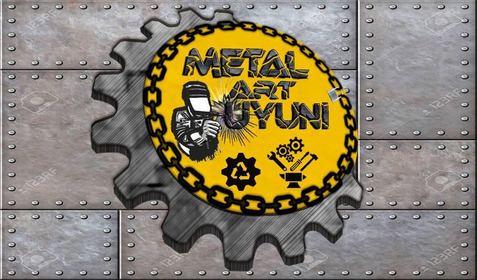
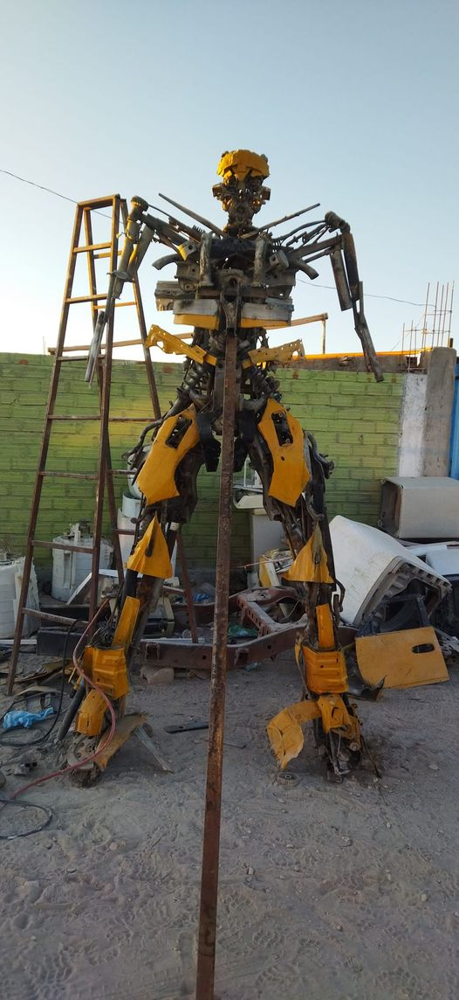
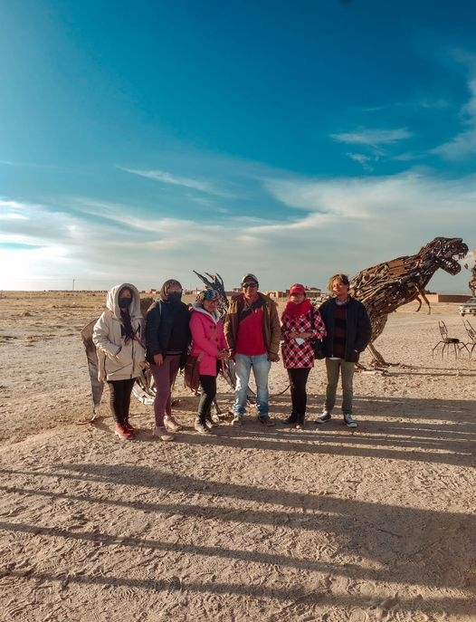
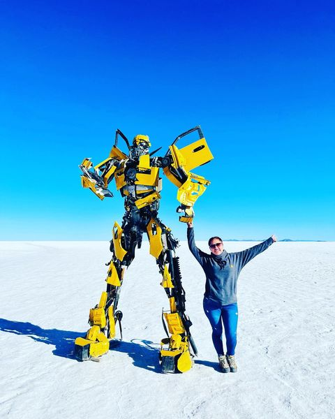

<DOCTYPE html>
    <html>
        <head>
                <link rel="stylesheet" href="estilos/style6.css">
                 <body>
                    <header>
    
                        <h1><i><center>EMPRENDIMIENTO EN ARTE</center></i></h1>
                        <font size="4">
                            <h2><i><center>METAL ART UYUNI</center></i></h2></font>
                    </header>
                        <aside>
                            <ul>
                                <font size="5">
                                <center><h3><i>¿Como nace METAL ART UYUNI?</i></h3></center></font>
                                    
                                <center><iframe
                                    class="item"
                                    scr="https://www.youtube.com/watch?v=RViMrcxtNWQ"
                                    title="you tube player"
                                    frameborder="0"
                                    allow=<iframe width="1280" height="720" src="https://www.youtube.com/embed/s7P7T0HSzKs" title="Museo de Arte metálico "METAL ART UYUNI" en base a chatarra- Gonzalo Llampa Condori (Uyuni - Potosí)" frameborder="0" allow="accelerometer; autoplay; clipboard-write; encrypted-media; gyroscope; picture-in-picture" allowfullscreen></iframe>
                                </center>
                                    
                                    <font size="5">
                                <center><h3><i><b>¿Qué servicios y productos ofrece METAL ART UYUNI??</b></i></h3></center></font>
    
                               <font color="black"
                               <font size="5">
                                <center><div id="caja1"><p><i>Compromiso con nuestra sociedad, medio ambiente, la música nuestra inspiración. El arte es nuestra pasión </i></p></center>
                               </div>
                               </font></font>
                           
    
                        <section>
                            
                                 <center></center>

                                 <font color="black"
                                 <font size="5">


                                <font size="5">
                                <h1><i><b><center>Mega Obras</center></b></i></h1></font> 
                                <center></center>
                                <div id="caja2"><p><i>Metal ART UYUNI será parte de la Feria Internacional de Potosí allá en la villa imperial.  Preparando a full las obras de arte  que irán.  Gracias a la Secretaria de Turismo y Cultura del Gobierno Autónomo Departamental de Potosí. </i></p></div>
        
                                <center></center>
                                <div id="caja2"><p><i>Comprometidos con la gente y sociedad. A pesar de tantas dificultades y tropiezos.  Seguiremos haciendo lo que más nos gusta, adelante  marcando diferencia en todas las instancias. perseverancia y actitud.</i></p></div>
                                <center></center>
                            </ul>
                        </section>
                            <footer>
                                <h2><b>Emprendimiento Desarrollado por:</b></h2>
                                <h3><i>Gonzalo LLampa Condori </i></h3>
                                <h4><i>Potosí- Bolivia           Contacto:  (+591) 67331740 </i></h4>
                            </footer>
                 </body>
                 </head>
    </html>